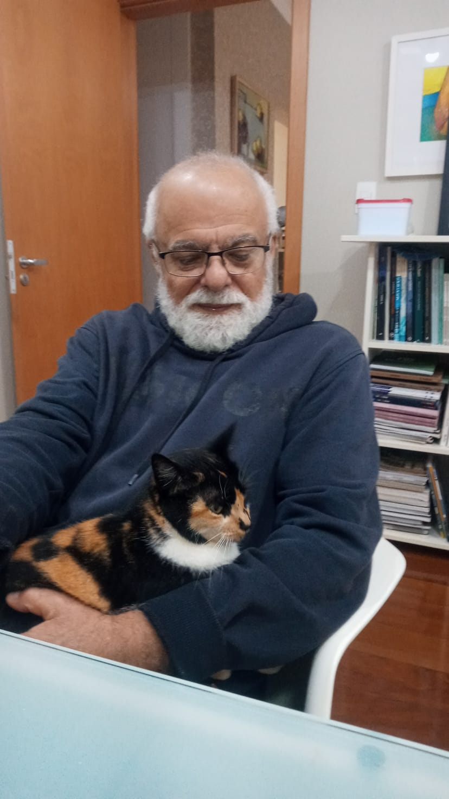
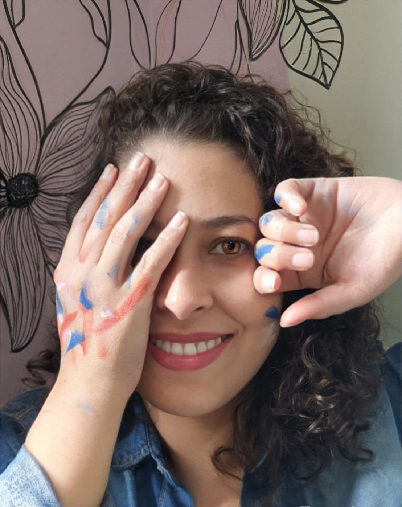
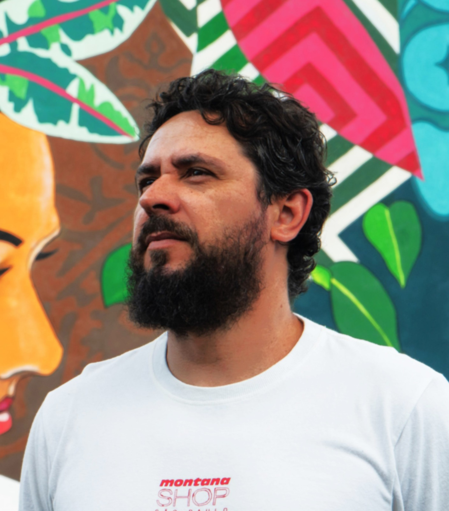
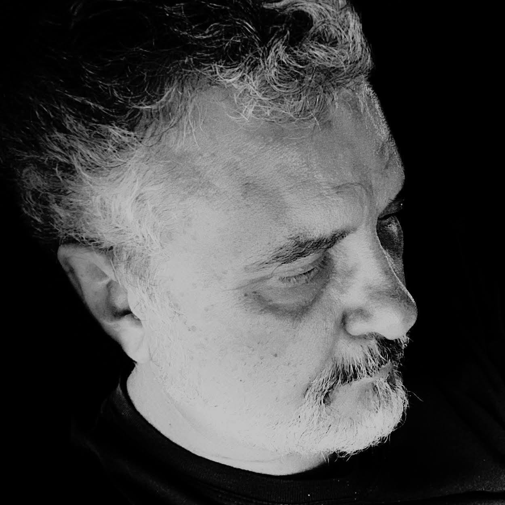

Antonio Fernando Pimenta da Silva, Podô.
"O laboratório das Artes, sempre foi o local onde tivemos a liberdade de expressar o
Novo,
de revelar e desenvolver nossos talentos, nossas técnicas, de expor nossas melhores expressões artísticas,
onde sempre fomos compreendidos e recebidos de braços abertos. É definitivamente o grande ponto de encontro
da Arte e dos Artistas da cidade.
O LAB já faz parte da nossa história da Arte."

Nayla Cristina Cintra Ferreira
"O Laboratório das Artes de Franca é um espaço essencial para a formação, troca e
experimentação artística. É um lugar de encontro onde pessoas de diversas
gerações podem aprender sobre técnicas variadas e desenvolver suas poéticas
pessoais. Como artista, sinto-me privilegiada por fazer parte deste movimento onde
as memórias são guardadas e a arte é celebrada."

Marcus Flávio Carvalho Borges Barbosa de Andrade
"Sou imensamente grato ao Laboratório das Artes, coordenado por Atalie Rodrigues Alves
e Mauro Ferreira, pelo acolhimento, inspiração e pela constante produção artística e
educacional. Parabéns pelo legado do Laboratório das Artes! Muito obrigado pelos mais
de 13 anos de incentivo, amizade e parcerias nas artes visuais. Que essa trajetória
continue inspirando e transformando vidas."

Ivo Indiano de Oliveira
"Eu acredito que o Laboratório das Artes de Franca é um espaço essencial para a
documentação da produção artística da cidade, e tem feito isso nos últimos 40 ou 50 anos.
É um espaço propício para a troca de informações e experimentação artística de toda a
região, um lugar de conexão para os artistas se conhecerem e apresentarem suas poéticas
pessoais.
É um espaço democrático e libertário, onde não há nenhum tipo de censura prévia onde eu
como artista, sempre tive a segurança de expor minha produção artística."